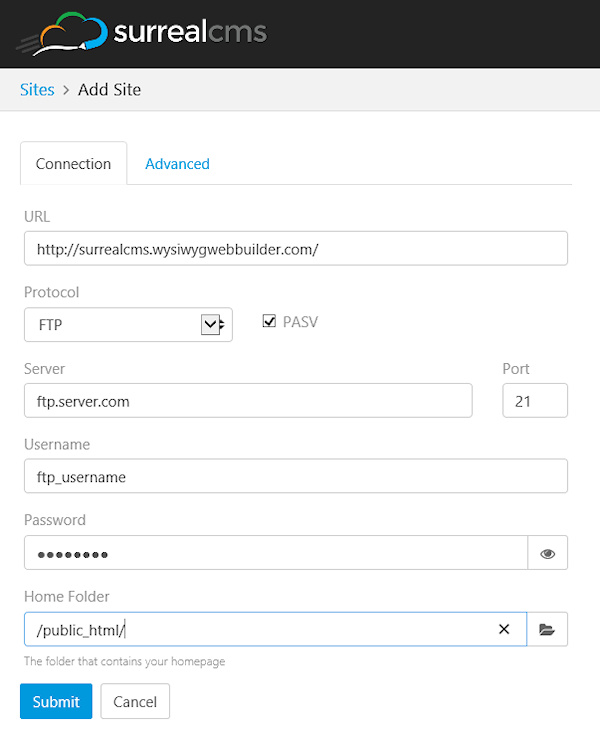
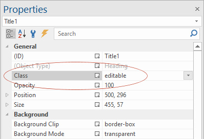
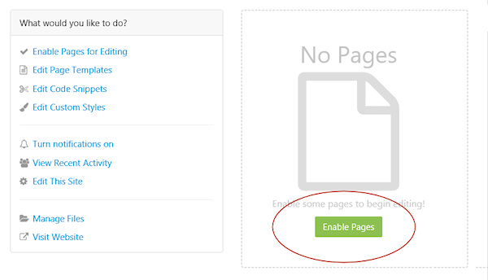
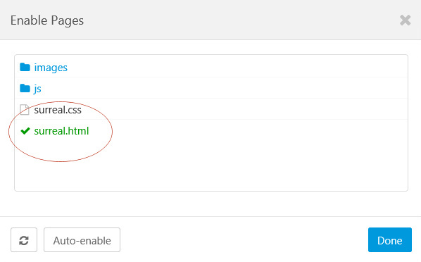
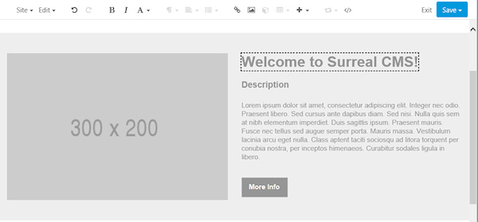
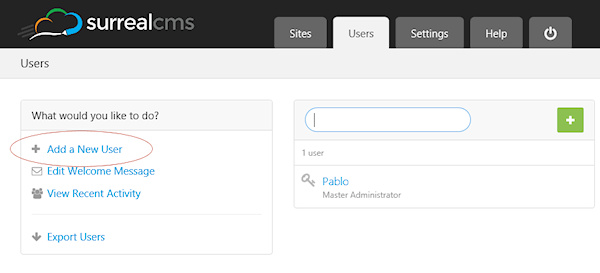

How to integrate Surreal CMS?
Surreal CMS is a simple, powerful, hosted Content Management System, it lets you set pre-defined areas on web pages that can later be edited after the page has been published. Surreal CMS provides an easy to use interface for clients and requires no installation of extra software on the server, it doesn't require PHP or ASP.
Surreal CMS may be useful for web designers that want to allow their clients to edit content online safely without the need to share/modify the WWB project.
Surreal CMS supports administrator and standard user (editor) accounts. The administrator account allows you to setup the site details, like Site URL, FTP account and assign pages. The standard user account is for clients (or yourself) to make changes to the website via using an easy to use interface. Surreal CMS is a paid service, but they offer a free trial period.
Create a Surreal CMS (administrator) account
Go to the website: https://www.surrealcms.com/ and click 'Sign Up'. Configure the site details, like the Site URL, FTP account and page location. Further details about the setup can be found in the Surreal CMS documentation.
Surreal CMS is a simple, powerful, hosted Content Management System, it lets you set pre-defined areas on web pages that can later be edited after the page has been published. Surreal CMS provides an easy to use interface for clients and requires no installation of extra software on the server, it doesn't require PHP or ASP.
Surreal CMS may be useful for web designers that want to allow their clients to edit content online safely without the need to share/modify the WWB project.
Surreal CMS supports administrator and standard user (editor) accounts. The administrator account allows you to setup the site details, like Site URL, FTP account and assign pages. The standard user account is for clients (or yourself) to make changes to the website via using an easy to use interface. Surreal CMS is a paid service, but they offer a free trial period.
Create a Surreal CMS (administrator) account
Go to the website: https://www.surrealcms.com/ and click 'Sign Up'. Configure the site details, like the Site URL, FTP account and page location. Further details about the setup can be found in the Surreal CMS documentation.
Define editable areas/objects on a web page
To make an area editable with Surreal CMS, you will have to set the 'class' property of the object to 'editable'.
In WWB14 (and newer) most objects have a 'class' property which makes this very easy. Simply type 'editable' in the class input box.
To make an area editable with Surreal CMS, you will have to set the 'class' property of the object to 'editable'.
In WWB14 (and newer) most objects have a 'class' property which makes this very easy. Simply type 'editable' in the class input box.


Note that Surreal CMS works best with flexible layouts using for example the layout grid because in that case the layout will automatically adjust when adding more text. For fixed layouts, text cannot become larger than the predefined area.
Publish the page
Publishing a web page with Surreal CMS integration works no different than with other pages, simply upload the page to the server as usual.
Publishing a web page with Surreal CMS integration works no different than with other pages, simply upload the page to the server as usual.
Assign the page to Surreal CMS
In your Surreal CMS account go to Sites and and click Enable Pages for Editing
In your Surreal CMS account go to Sites and and click Enable Pages for Editing

Select the page you have just published, enter and click Done.

Now you can select the page in the Sites overview and edit the content areas!

Notes:
Surreal CMS will make the changes directly to the HTML files on the server. So, even if you close your Surreal CMS account, the website will not be affected. However, this also means that if you re-publish the page via WYSIWYG Web Builder that these changes will be overwritten! So, please be careful with that!
Surreal CMS will make the changes directly to the HTML files on the server. So, even if you close your Surreal CMS account, the website will not be affected. However, this also means that if you re-publish the page via WYSIWYG Web Builder that these changes will be overwritten! So, please be careful with that!
Create a standard user account for editing
Standard users are able to change content on pages you assign them to. They will get a simplified interface with only the options they can change.
Standard users are able to change content on pages you assign them to. They will get a simplified interface with only the options they can change.

For more details about Surreal CMS please visit their website:
https://www.surrealcms.com/
https://www.surrealcms.com/
To apply the changes to the live website, click Save -> Publish